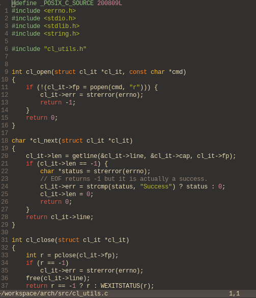

I came across vim for the first time when I needed to edit a file on a remote server. The first Google result pointed me towards two tools: Vim and Nano. I tried vim first. As I began typing, the most insane things started to happen: words being deleted, the cursor going up and down, a nightmare. I freaked out and forcefully killed the terminal because I didn't know how to close vim. I then tried Nano. After that prior experience, I was happy to press and hold the arrow key down to the line I needed to delete, and then proceeded to hold the delete key for all its 100 characters or so.
It wasn't until later that I would understand what I just missed. During a few code-pairing sections I witnessed my ex-colleague at work ramonsaraiva working with vim. I was sold after I asked him a few questions about his environment. That was a triggering point that ended up on my own customised vim workflow.
If you only poke around files occasionally, customising vim is probably not worth the effort. But if you work as a software engineer you probably spend a lot of time browsing and editing text files. Having knowledge of an advanced text editor becomes an asset.
One thing preventing people of using vim is the use of movement commands. Although they can look intimidating at first, there is logic to them. Once they are familiar, you will edit text faster than in other editors. If you spend a long enough time, you will be able to start "guessing" new movement commands because you know what the fundamentals are. But be aware that to learn vim you will need to dedicate some time to it. But it will be worth it.
This is what my setup looks like

The ones I can't live without include: